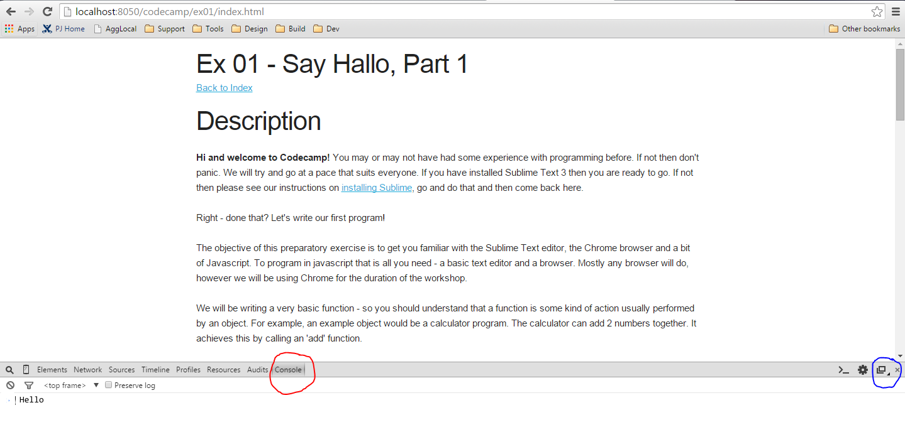

Hi and welcome to Codecamp! You may or may not have had some experience with programming before. If not then don't panic. We will try and go at a pace that suits everyone. If you have installed Chrome and Sublime Text 3 then you are ready to go. If not then please see our instructions on installing Chrome and installing Sublime, go and do that and then come back here.
Right - done that? Before we start the course proper, we would like you to have a play with Sublime Text and Chrome. We would also like you to get familiar with the look of javascript. In this pre-course exercise we are going to write our first program. Oh and by the way, if you hadn't already realised, you should be viewing this page in Chrome! So make sure you are doing this before you move on.
You must ensure at this point that you are viewing this page in Google Chrome. No Internet Explorer, Firefox, Safari or Opera!
The objective of this preparatory exercise is to get you familiar with the Sublime Text editor, the Chrome browser and a bit of Javascript. To program in javascript all you need is a basic text editor and a browser. Mostly any browser will do, however we will be using Chrome for the duration of the workshop.
We will be writing a very basic function - so you should understand that a function is some kind of action usually performed by an object. An example object would be a calculator program. The calculator can add 2 numbers together. It achieves this by passing two numbers to and calling an 'add' function.
Our example is slightly different. We are going to create a function that says 'Hello'. Yes believe it or not that is all it does!!! We will build on the function over the next few examples, but for now, lets just introduce the simple version!
function sayHello() {
/* This will print the word 'Hello' to the screen....but where ??? */
console.log('Hello');
}
sayHello();
So what have we just done? We created a single function with the name 'sayHello'. We then added a comment. A comment is there to help our understanding of the program. It doesn't actually do anything, it is simply meant to be a description of what is going on in the program. Comments can be written in 2 ways:
// Like this with 2 forward slashes at the beginning of the line
/* Or like this with a forward slash and asterisk at the beginning
and the same in reverse at the end */
The next line simply prints out some text to the screen. 'console' is just an object (we will learn about objects later) that knows how to print to the screen (amongst other things). The console object has a method (or function!) called 'log' that accepts some text. In this case we have passed the text 'Hello' into the 'log' method.
Note well the 'dot' notation that the object uses to call the 'log' method: console.log('hello'). 'console' is the object, 'log' is the method and 'hello' is the message passed to the method. Confused? - don't worry. There will be plenty of time for explaining later!
There is one more line of code to consider. We haven't actually called the function yet. We have only defined it which means we now possess a shiny new function that will politely say 'Hello' when called upon, however that is exactly it....we need to call upon it! We do this with the final line of code sayHello()
One more little note. Did you notice the semi-colon (;) at the end of a couple of the lines? In Javascript semi-colons are used to separate code statements and lines.
Let's save the program. To do this select File -> Save or an easier way is the key combination CTRL+S on Windows or ⌘+S on Mac.
Ok, so that's the program. How do we run it? Well you may have noticed that there is also a file called 'index.html' in the same folder as main.js. In fact you are looking at this page right now in Chrome! This page actually loads and runs all of the Javascript code when you navigate to the page in your browser. You don't have to worry about how this works now as we are more concerned about seeing the results of our program - right?!
Since we just saved the javascript code, we are going to have to reload the index.html page. To do this use CTRL+R in Windows and ⌘+R on the Mac, or you can just hit F5 in either Windows or Mac. The page will reload and your javascript code will run. Hmm......so what actually happened?? Let's take a look.
This next bit, very few people know about - in fact it might be interesting to see if your parents know where to find the bit of text that we have asked the program (or rather the console!) to print. You see when you loaded the page, our program executed (ran), printed out 'Hello' somewhere on the screen and finished.
CHALLENGE: Ask mum or dad where they think 'Hello' is.
Do you give up? So the answer is that we need to open up Chrome's Developer Tools window. To do this on a Mac use the following key combo: ⌘+OPTION+I (that is 'i')
If you are on Windows use F12
You should see a window open up (on the bottom half of the screen) that looks something like this:

OK - you need to make sure of two things at this point. Firstly that you click on the 'console' tab, highlighted in red. Secondly, that the window that just appeared is docked on the bottom of the main window as in the screenshot. If it isn't, you will need to 'play with' the icon hightlighted in blue.By clicking on the icon once and holding down the left mouse button you will see the other options for this icon. Be warned it can be a bit tricky!
So, just to recap then:
Phew! We made it to the end. I hope that you have begun to understand something of the javascript programming language. In the Codecamp workshop we will be modifying this program, learning about Objects, variables, methods/functions, if...else statements and for..loops. We will also be building a 2D shoot-em-up game or at least the beginnings of one! If you want to read more about javascript, you can find plenty of resources on the web.